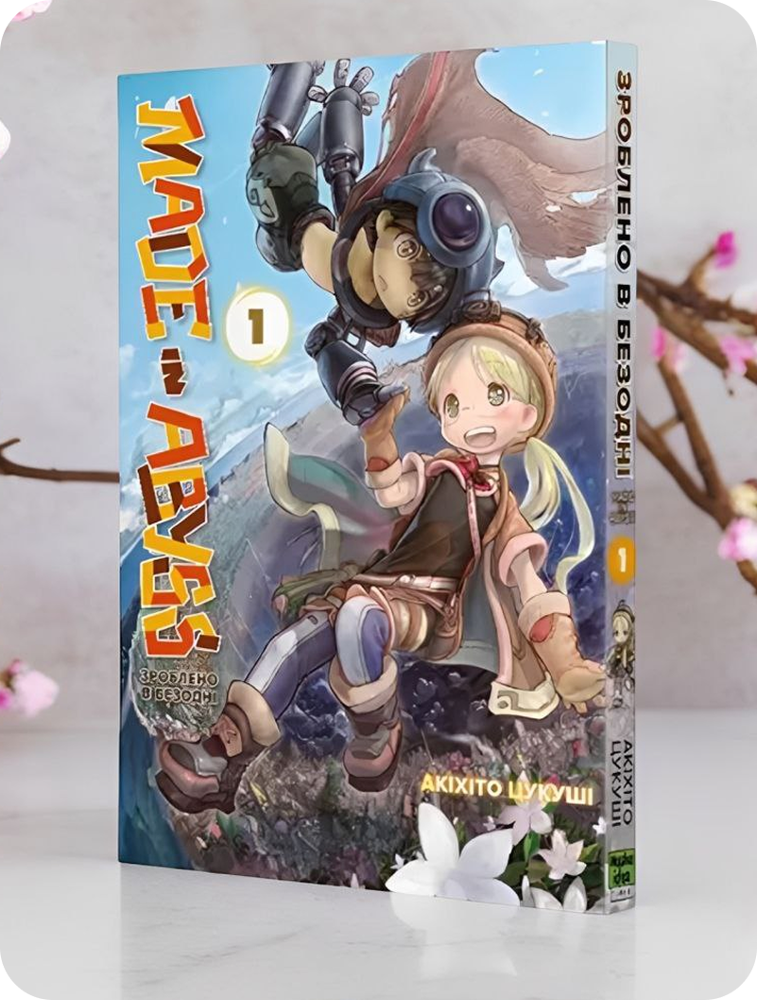

lives in an orphanage in the city of Orth, which is built on the cliffs surrounding a massive Abyss—a place harboring many secrets, natural wonders, and ancient artifacts. During an expedition to the upper layers of the Abyss, she discovers a mysterious artifact: a robot with the appearance of a young boy. Riko names him Reg and hides him in the orphanage, where he pretends to be an ordinary child with mechanical prosthetics.
She is kidnapped and sold as a maid to the imperial palace, where her expertise catches the attention of the chief eunuch Renshi, and she becomes a personal poison taster for the emperor's senior consorts.
The story unfolds in a parallel steampunk world, in the city of Orth, located on a small island in the middle of the ocean. At the center of the island lies the entrance to a massive circular pit resembling a crater — the Abyss. Its diameter reaches about one kilometer, its walls are lined with a spiral descent, and its depth extends for dozens of kilometers, with the true bottom still unknown to anyone.